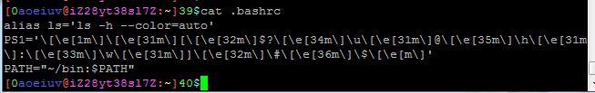

稍稍深入一点认识Shell
Shell地位相当于windows上的cmd，或者说是PowerShell，首先Shell本身也是一个程序，或者说只是一个程序，Shell的英文直译是“壳”，是相对于“核”的，“核”是看不见的然而“壳”是看的见的，也就是Shell其实就是操纵Linux的人直接控制的东西，说白了就是那个输入命令的界面，我们的一个一个命令实际上都是传给Shell，然后由Shell产生新进程去调用其他程序，进入各种SHELL时都会先执行一些脚本，比如bash会执行家目录下的.bashrc，也就是~/.bashrc，zsh也有类似的.zshrc，这个“rc”是“run commands”，就是运行一堆命令的意思，可以在这文件里写上每次都要运行的命令。

因为Shell这个程序相当常用，所以不同习惯的人开发出了不同的Shell，默认最基本的sh(Shell)，自带，最常见最常用的bash(Bourne-Again SHell)，语法接近c语言的csh(C Shell)，据说比bash强大的zsh(Z Shell)，各有特色，手感完全不同，有兴趣可以都试试，主要讲的是bash。